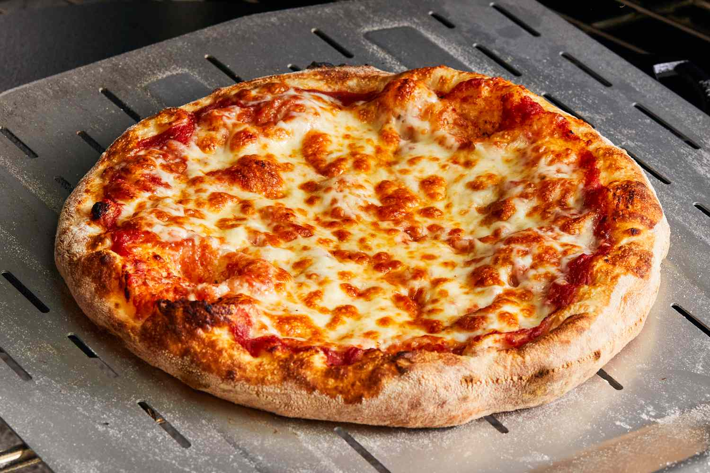

Cheese Pizza

Description
Cheese pizza, also known as Margherita pizza, is a timeless and
beloved Italian dish that showcases the simplicity and elegance of
traditional pizza. This pizza is a canvas of pure culinary delight,
featuring a thin and crispy crust topped with a luscious tomato sauce
and a generous layer of bubbling, golden-brown mozzarella cheese.
Ingredients
- 1/2 recipe homemade pizza dough
- 1 Tablespoon (15ml) olive oil, divided
- 1 Tablespoon (8g) cornmeal
- 1/2-3/4 cup (127-190g) pizza sauce
- 8 ounces sliced mozzarella cheese
- 1 and 1/2 cups (6oz or 168g) shredded mozzarella cheese
- 1 and 1/2 cups (6oz or 168g) shredded mozzarella cheese
- 2-3 Tablespoons (10-15g) grated parmesan cheese
- dried basil or Italian seasoning, to taste
Steps
- On a lightly floured surface, stretch the dough into a 12-inch circle.
Transfer to a non-stick baking sheet.
- Spread the pizza sauce onto the dough, leaving a 1-inch border
around the edge.
- Sprinkle with mozzarella.
- Sprinkle with parmesan before baking for 12 to 14 minutes, or
until the crust is browned and the cheese is bubbling.